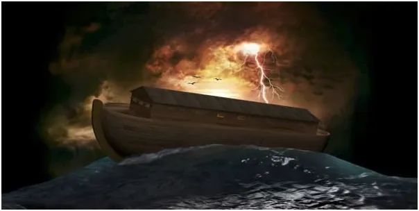
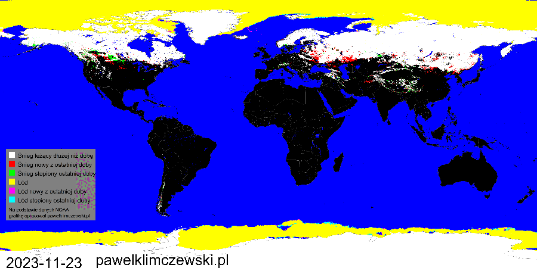
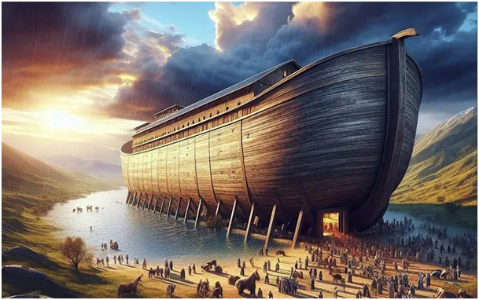
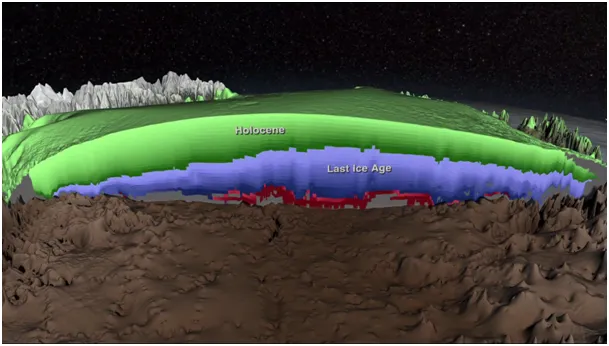
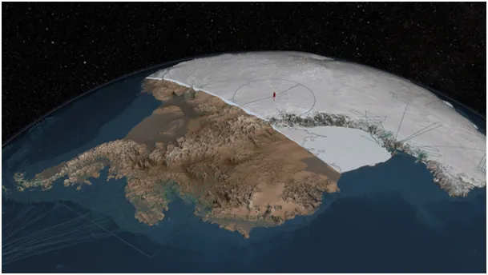

Poziom oceanów opada, inaczej być nie może. Potop nam nie grozi, ale lokalne powodzie tak.
Europa w okowach zimy w listopadzie. Drugi rok z rzędu to jeszcze nie reguła, ale moje studia nad kosmicznymi uwarunkowaniami klimatu na Ziemi co roku upewniają mnie bardziej, że "chmury słuchają gwiazd". Mamy na to bardzo dużo przesłanek i żadnych dowodów przeciwko.

Na tej animacji widzimy jak przez cały przestępny rok, przez 366 dni, wraz ze zmianą kąta nachylenia ziemskiego równika do Słońca przepływa przez nasz świat słoneczna Energia. Półkula północna jest radykalnie inna niż południowa. Na południu śnieg, jeśli pada na Antarktydę, to zasadniczo w postaci zmrożonej zostanie już tam na wieki z powodu braku dodatnich temperatur na tym kontynencie. Śladowe ilości trafią jako para wodna w wyniku sublimacji. Jest to proces, w którym ciało stałe, np. pod wpływem promieniowania albo zwykłego wiatru traci poszczególne cząstki ze swej powierzchni. Odrywają się one i jako cząstki niewidzialnego, bo przeźroczystego gazu, czyli pary wodnej mieszają się z atmosferą.

Większość śniegu padającego na Antarktydę oraz Grenlandię na naszej półkuli zostaje przykryta kolejnymi warstwami tworząc coraz to bardziej zbity lód. Dzieje się tak od bardzo dawna. Proces kumulacji śniegu w obecnej formie na Antarktydzie i Grenlandii trwa nieprzerwanie od początku holocenu, czyli od około 11 700 lat.

Wcześniej gromadził się tam lód z okresu zlodowacenia, poprzedniej epoki geologicznej. Masa tego lodu wbija grunt pod nimi w skorupę ziemską na setki metrów. To są podstawowe fakty z geologii, szybkość zapadania się skorupy ziemskiej z powodu nacisku tego lodu może sięgać do 10 mm rocznie na Antarktydzie oraz do 2 mm rocznie na Grenlandii.

Jednak śnieg powierzchniowy jest stosunkowo lekki i dlatego wysokości tych obszarów stale się podnoszą, śnieżne góry rosną. Przypomnę tylko, że pomiary lotnicze z lat 2009-2019 wskazują, że lód morski wokół Antarktydy także się rozrasta.
Zatem skoro wody na Ziemi nie przybywa z Kosmosu, a stale zmienia się ona w wieczny śnieg w okolicach podbiegunowych to musi jej ubywać w oceanach. Wiemy, że są miliony ludzi, którzy z tych faktów wyciągają wniosek przeciwny, ale im już nie pomożemy.
Mnóstwo pieniędzy wydano na ratowanie "zatapianych obszarów". Piasek jest cięższy od wody dlatego erozja brzegów mórz jest zjawiskiem naturalnym. Morze zabiera materię w swe głębiny z powodu grawitacji, a nie wyrzuca piachu z głębin na wydmy i skały.
To są proste sprawy, które pamiętam ze szkoły podstawowej pod koniec XX wieku, a mimo to jesteśmy mniejszością, która zdaje sobie z tego sprawę w epoce AI!
Oczywiście spadek poziomu oceanów w wyniku opisanego procesu opada w stopniu niezauważalnym, ale chodzi o to, że skoro opada to nie rośnie!
Paweł Klimczewski